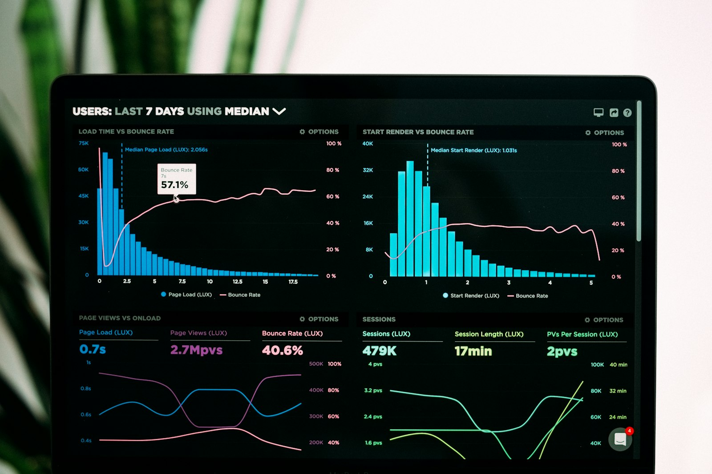

Bilva Design Template
One dark-mode design system with three interchangeable color themes. Use the floating switcher (bottom right) to preview every component below in Gold, Dark Blue or Multi-color. The whole site re-themes from a single CSS variable block.
Active theme:
Three themes, one system
Every theme shares the same layout, type and components. Only the color tokens change, so switching is a one-line change to data-theme on the <html> element.
Color tokens
Swatches below are live: they read the current theme's CSS variables.
Surfaces & text
--bg--bg-2--bg-3--bg-4--text--mutedAccents
--accent--accent-2--accent-3--c1--c3--c4Gradient
--grad is used for primary buttons, stat numbers and accent bars. --grad-text is a lighter variant tuned for headline text.
Hex reference by theme
| Token | Gold | Dark Blue | Multi-color |
|---|---|---|---|
--bg | #0A0B0F | #050914 | #0A0912 |
--bg-2 | #10121A | #0B1224 | #120F1F |
--bg-3 | #171A24 | #111A33 | #1A1630 |
--text | #F5F3EE | #F1F5FF | #F7F5FF |
--muted | #8F8C84 | #8A96B5 | #9A92B8 |
--accent | #D9AE4E | #4F8DFF | #8B5CF6 |
--accent-2 | #F3D27C | #7FB0FF | #EC4899 |
--accent-3 | #B8862B | #2F5FD6 | #06B6D4 |
--c1 … --c4 | #F3D27C · #D9AE4E · #B8862B · #E6C36A | #7FB0FF · #4F8DFF · #22D3EE · #A5B4FC | #22D3EE · #A78BFA · #F472B6 · #FBBF24 |
--grad | #F3D27C → #D9AE4E → #B8862B | #7FB0FF → #4F8DFF → #2F5FD6 | #06B6D4 → #8B5CF6 → #EC4899 → #F59E0B |
Sora for display, Inter for body
Both are open-source Google Fonts. Headlines use tight letter-spacing (−0.02 to −0.03em) and one gradient-accented phrase per heading, never more.
h1 · Sora 600 · clamp(2.5rem, 5.4vw, 4.4rem)Where innovation meets technology mastery
h2 · Sora 600 · clamp(1.9rem, 3.4vw, 2.9rem)Engineering intelligent outcomes
h3 · Sora 600 · 1.2–1.45remArtificial Intelligence
eyebrow · Sora 600 · .78rem · uppercaseCapabilitieslead · Inter 400 · 1.05–1.25remBilva builds world-class software, AI and cloud solutions for enterprise clients.
body · Inter 400 · 1rem / 1.6Our client engagement model is built on the cornerstones of integrity and trust, delivering transformational business solutions.
small · Inter · .875remSupporting text, captions and metadata.
Card variants
All cards share a 1px border, 18px radius and a hover lift. Icon tints cycle through --c1…--c4 in the multi-color theme.
Service card
Icon, title, two-line description and a text link. Used in capability grids.
Learn moreAccent-top card
Same card with a gradient bar on top. Used for the four pillars.
"Testimonial card with rating, quote and attribution."

Industry card
Photo with dark gradient overlay; gradient underline on hover.

Media card
Image on top, meta chips, title and link. Used for case studies and insights.
ReadStep card
Auto-numbered with a gradient counter. Used for process sections.
Inputs and focus states
Inline SVG icon set
Lucide-style 24px strokes, rendered from main.js. Use <i data-icon="name"></i> anywhere.
Logo usage
The original gold leaf-mark from bilva.us, paired with a Sora wordmark. Keep clear space equal to half the mark's height on all sides.
Spacing, radius & layout
Spacing scale
--space-1 … --space-4--space-5, --space-6--space-7, --space-8--space-9, --space-10 (sections)Radius
Layout
| Container | max-width: 1200px, 24px side gutter |
| Breakpoints | 1080px (tablet landscape) · 900px (mobile nav) · 640px (phone) |
| Header | 76px sticky, blurred background, mega menu for Capabilities |
| Motion | 350ms ease for hover; scroll reveal with 70ms stagger; respects prefers-reduced-motion |
| Theme switch | html[data-theme="gold|blue|multi"], persisted in localStorage, overridable with ?theme= |